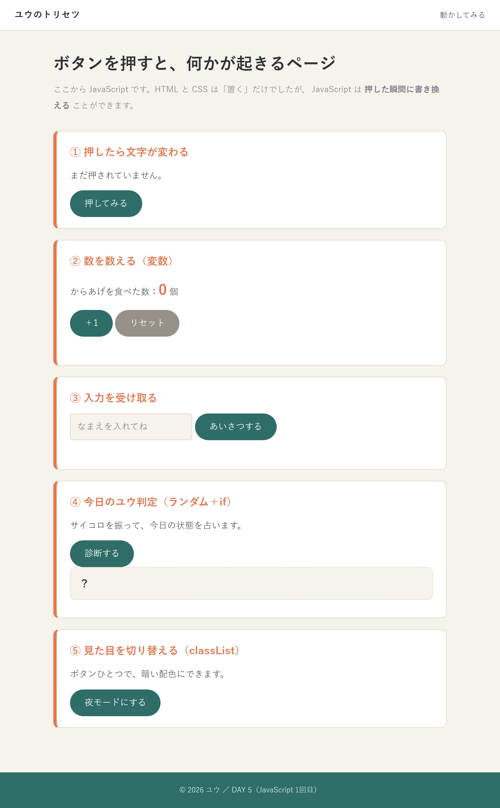
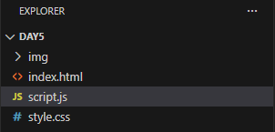
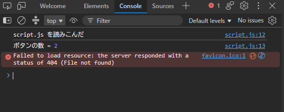

押したら、
変わる
ここからが「プログラミング」。
でも、やることはたった3ステップしかない。
第5回 ／ 変数・イベント・DOM操作・if・関数

けど覚えるのは3つだけ。
5つのボタンを作る
- 押したら文字が変わるボタン
- 押すたび数が増えるカウンター
- 入力した名前であいさつする
- サイコロを振って結果が分岐する
- ページ全体を夜モードに切り替える

JavaScript を置く場所
| 書き方 | いつ使う |
|---|---|
| 別ファイル <script src="script.js"> | これ。CSSと同じで、分けたほうが読みやすい |
| HTMLに直接 <script>…</script> | 数行の試し書きだけ |

style.css 見た目
script.js 動き
やることは、いつもこの3つ
① 取ってくる
HTMLの中から、動かしたい部品を探して変数に入れる。
② 何かする
「クリックされたら」を予約して、その中で計算や判定をする。
③ 書き戻す
結果を画面に反映する。文字・見た目・クラスなど。
止まったら「今どれをやろうとしてる？」と自分に聞くと、だいたい進む。
変数 ── 値に名前をつける箱
| 使うとき | |
|---|---|
| const | まずこれ。書き換えないものすべて |
| let | 数を増やすなど、変える必要があるときだけ |
| 昔の書き方。使わない |
型（データの種類）
「5」と 5 は別物
比べるときは === を使う
| 記号 | 意味 |
|---|---|
| === | 厳密に等しい。いつもこれを使う |
| !== | 等しくない |
| > < >= <= | 大小（C と同じ） |
| && ｜｜ ! | かつ・または・否定（C と同じ） |
※ 代入は = 1個、比較は === 3個。ここも定番のミス。
console.log ── 中身をのぞく
C言語の printf にあたるもの。画面には出ないが、 F12 の Console タブに表示される。

右端の script.js:12 をクリックすると、
その行へ飛べる。どこで出した log かが一目で分かる。
赤い文字が出たらそれがエラー。次のページで読み方をやる。
HTMLの部品を取ってくる
| 書き方 | 取れるもの |
|---|---|
| getElementById("x") | id="x" の要素1つ |
| querySelector("...") | 条件に合う最初の1つ |
| querySelectorAll("...") | 合うもの全部（一覧） |
画面に書き戻す4つの方法
| 書き方 | 変わるもの | 例 |
|---|---|---|
| .textContent | 文字を差し替える | hello.textContent = "こんにちは"; |
| .value | 入力欄の中身（読み書き両方） | const n = input.value; |
| .style.〇〇 | CSSを直接書き換える | bar.style.width = "60%"; |
| .classList | クラスを付け外しする | body.classList.toggle("dark"); |
イベント ── 「〜されたら」を予約する
予約するだけで、その場では実行されない。 実際に押されたそのときに中身が動く。
| イベント名 | タイミング |
|---|---|
| click | クリックされた |
| input | 入力欄が変わるたび |
| change | 入力が確定した |
| keydown | キーが押された |
| submit | フォームが送信された |
| mouseover | マウスが乗った |
if ── 場合分け
上から順に判定される
最初に当てはまった1つだけが実行され、残りは無視される。 だから条件は厳しいものから書くのが鉄則。
× よくある間違い
count が 12 でも、先に >= 5 に当たってしまう。
関数 ── 処理に名前をつける
| 言葉 | 意味 |
|---|---|
| function | 「関数を作るよ」の合図 |
| rollDice | 付けた名前 |
| ( n ) | 引数。受け取る値 |
| return | 返す値。ここで関数は終了 |
サイコロを作る
この形は一生使う。丸暗記でOK。
ステップで見る
| 式 | 結果の例 |
|---|---|
| Math.random() | 0.7234… |
| × 6 | 4.340… |
| Math.floor() | 4 |
| + 1 | 5 |
Math.max(a, b) 大きいほう
Math.min(a, b) 小さいほう
1つずつ作って、1つずつ動かす。
全部できたら、今日はおしまい。

まずは1個目だけ、確実に動かす
- HTMLに id を付ける（これが目印）
- script.js を作って読み込む
- 3ステップを書く
- 保存 → F5 → 押す
- 動かなければ F12 でエラーを見る
残りは同じ形の応用
② カウンター
ポイント：let を関数の外に置く（中に書くと毎回0に戻る）
③ 入力を受け取る
ポイント：入力欄は .value。 バッククォート ` で囲むと ${ } が使える
④ サイコロ判定
ポイント：厳しい条件から書く
⑤ 夜モード
ポイント：CSS側に body.dark { … } を書いておく。 JSは1行だけ
おまけ ── 覚えると盛り上がる3つ
① 音を鳴らす
HTMLと同じフォルダに sound.mp3 を置くだけ。 practice/day5/ に1つ入れてあるので、すぐ試せる。
最初のクリックより前には鳴らない（ブラウザの決まり）。
② なめらかにスクロール
下に900pxぶん、すーっと移動する。 「答えを見る」ボタンなどに使うと気持ちいい。
③ ダイアログを出す
alert は知らせるだけ。 confirm は OK / キャンセルで true / false が返る。
window（画面）の alert（知らせる）を、"こんにちは" という材料で実行せよ。 この もの . 動作( 材料 ) の形は、これから何度も出てくる。
JavaScript のつまずき
| エラー / 症状 | 原因 | 直し方 |
|---|---|---|
| Cannot read properties of null | 部品が取れていない | id のスペル確認／script を body の最後に |
| 〇〇 is not defined | 変数名・関数名のミス | 大文字小文字も区別される |
| 〇〇 is not a function | メソッド名のミス | addEventListner ではなく addEventListener |
| Unexpected token | かっこ・クォートの閉じ忘れ | VSCode の赤い波線を見る |
| 何も起きない・エラーも出ない | script が読み込まれていない | src のファイル名を確認 |
| 数が「11」ではなく「101」になる | 文字列の連結になっている | Number() で数値に変換 |

DAY 5 の構文
| 基本 | |
|---|---|
| const / let | 変数を作る |
| function 名前() { } | 関数を定義 |
| return | 値を返す |
| if / else if / else | 場合分け |
| === / !== / >= | 比較 |
| && / ｜｜ / ! | かつ・または・否定 |
| console.log( ) | 中身をのぞく |
| Math.random( ) | 0以上1未満の乱数 |
| Math.floor( ) | 切り捨て |
| Number( ) | 数値に変換 |
| 画面をさわる | |
|---|---|
| getElementById( ) | id で取ってくる |
| querySelector( ) | CSSの書き方で1つ |
| querySelectorAll( ) | CSSの書き方で全部 |
| .textContent | 文字を読み書き |
| .value | 入力欄の中身 |
| .style.〇〇 | CSSを直接変える |
| .classList.add( ) | クラスを付ける |
| .classList.remove( ) | クラスを外す |
| .classList.toggle( ) | 付け外しを切り替え |
| addEventListener( ) | 「〜されたら」を予約 |
reference/js-syntax.html に全部まとめてある。
チェックリスト
- 「取ってくる → 何かする → 書き戻す」が言える
- ボタンを押して文字を変えられる
- const と let の使い分けができる
- if で分岐が書ける
- F12 の Console でエラーを読める
exercises.html の問12〜14も解く。